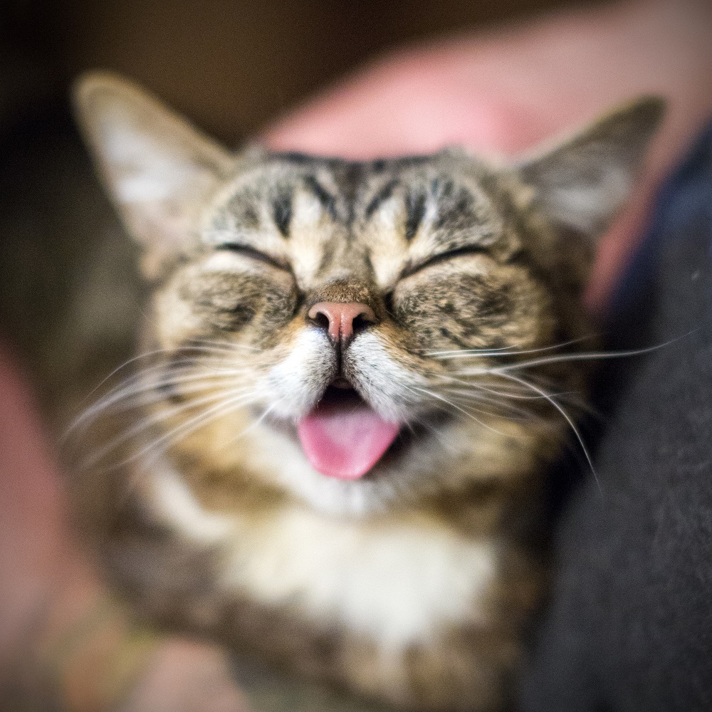
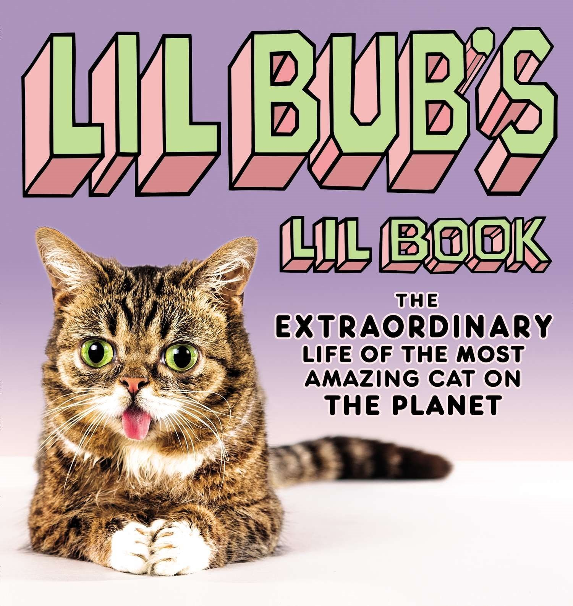
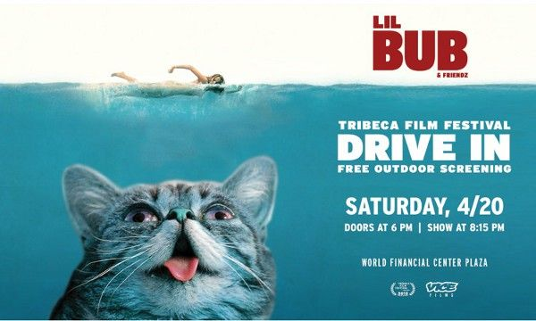

Lil BUB is an Internet celebrity cat from America. As the runt of her litter, born with multiple disabilities, she wasn't expected to even find a permanent home. Yet Mike Bridavsky decided to take in this cat, that soon proved to be a wonder.
When Bridavsky’s friends reached out to him with the purpose of finding Lil Bub a home, he adopted her. Lil BUB’s photos were first posted to 2011 Tumblr, but they were deleted after a feature on Reddit.
When she was a year old, she was diagnosed with osteopetrosis, an extremely rare bone condition. So rare, that BUB was the only cat in recorded history to have it.
She ended up "starting" a charity for animals with disabilities, and has raised over $200 000 worldwide.
In 2013, Lil BUB has "published" "Lil BUB's Lil Book", which was succesful with thousands of pet lovers. However, she is best known for her autobiography, "Lil BUB & Friendz". It takes the form of an hour-long movie, that depicts the first year and a half of Lil BUB's life. Described as extremely heartwarming, the movie premiered worldwide at the 2013 Tribeca Film Festival, proceeding to win "Best Feature Film" award.
Lil BUB has also hosted multiple Meets and Greets to further promote her charity, and posed for a PETA campaign. She is known as one of the most influential cats in the world.
Return to the top of the page.